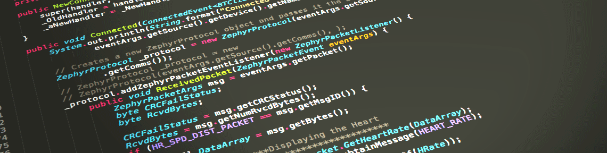

জাভা মাল্টিথ্রেডিং মাল্টিথ্রেডিং কি? মাল্টিথ্রেডিং মাল্টিটাস্কিং এর একটি বিশেষ ফর্ম । মাল্টিটাস্কিং এর সাথে সবাই পরিচিত । যেমন কেও কম্পিউটারে টাইপ করার সময় ক্রোমে ইন্টারনেট ব্রাউজ ও করা যায় এইটা হল মাল্টিটাস্কিং । কিন্ত মাল্টিথ্রেডিং ও টাস্কিং এর মধ্য পার্থক্য রয়েছে । প্রসেসড বেসড মাল্টি টাস্কিং এ একটি প্রোগ্রামই হল ক্ষুদ্রতম একক । আর থ্রেড বেসড মাল্টিটাস্কিং এ থ্রেডই ক্ষুদ্রতম একক । থ্রেড হল প্রোগ্রামের এর অংশ । মাল্টিটাস্কিং এ দুইটা মেইন মেথড পাশাপাশি রান হয় আর মাল্টিথ্রেডিং একটা মেইন মেথড থাকে । এই কারনে মাল্টিথ্রেডিং অপেক্ষা মাল্টি টাস্কিং অনেক হেভি ও আলাদা মেমরি স্পেস এর প্রয়োজন হয় । কিন্তু দুইটা আলাদা থ্রেড একই মেমরি স্পেসে রান হয় । ইন্টার প্রসেস কমনিকেশন ও কনটেক্সট সুইচিং অনেক কস্টলি কিন্ত থ্রেড বেসড কমনিকেশনে প্রায় কোন কস্ট নেই এখন মাল্টিথ্রেডিং কেন দরকার ? যেমন ধরি ফেসবুক মেসেঞ্জার এপ এটি একি সাথে ইন্টারনেট কানেশন আছে কিনা চেক করে ও মেসেজ আদান প্রদান করে এখন থ্রেড না থাকলে একটি প্রসেস শেষ হওয়ার জন্য বসে থাকতে হত ... দেখা যেত ইন্টারনেট কানেশন চেক করার সময় এপ হ্যং হয়ে আছে আবার ধরা যাক টেক্সট এডিটর এটি স্ক্রিনে টেক্সট দেখানোর সাথে সাথে টেক্সট ও ফরমেটিং করে ।